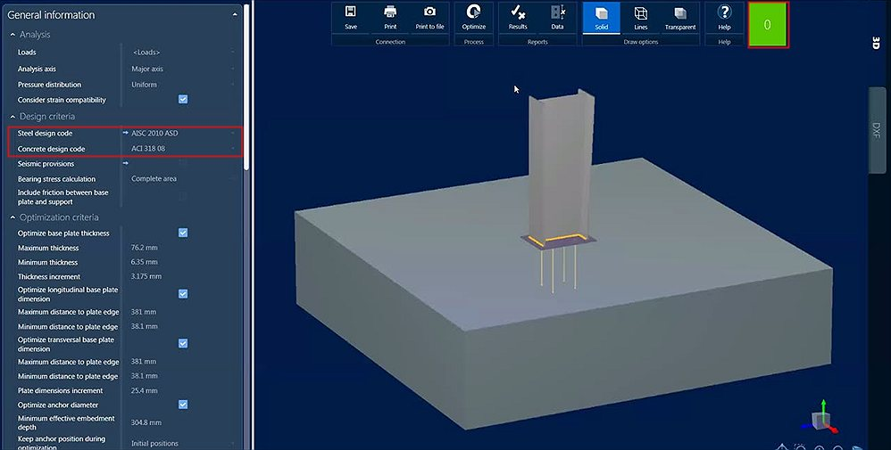
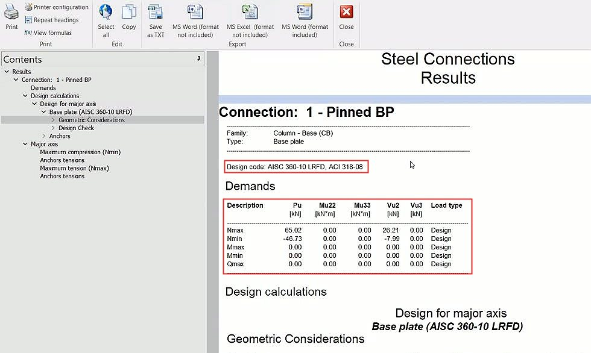

Bài 15.4. Chân cột (J8, DG1, ACI) Column base plates (AISC J8, Design Guide 1, ACI 318-08)
Chân cột khớp được kiểm tra qua một chuỗi trạng thái giới hạn: ép mặt bê tông (J8), chiều dày bản đế (DG1), neo chịu kéo và nón bê tông (ACI 318) và truyền lực cắt.
- Tính $m$, $n$, $\lambda n'$ và chiều dày bản đế khi nén, khi nhổ theo DG1.
- Kiểm tra truyền lực cắt bằng ma sát và so sánh hệ số $\mu$ của DG1 (0,55) với TCVN (0,25).
1. Tình huống
Bài tập Buổi 15: chân cột H(300)×200×6×10, bản đế 350 × 240 × 16, 4 bu lông neo M24, chịu $P_u$ = 65,02 kN (nén) và $-46{,}73$ kN (nhổ). RAM Connection cho tỷ số 0,6 sau khi bật chốt chống cắt. Kỹ sư cần tính tay để biết trạng thái giới hạn nào quyết định.
2. Nội dung chính
Trình tự kiểm tra chân cột khớp theo hệ Mỹ:
- Ép mặt bê tông (J8-2): $\phi_cP_p = 0{,}65 \times 0{,}85f'_cA_1\sqrt{A_2/A_1}$, với $\sqrt{A_2/A_1} \le 2$.
- Bản đế khi nén (DG1): $t_{\min} = l\sqrt{2P_u/(0{,}9F_yBN)}$, $l = \max(m, n, \lambda n')$.
- Bản đế khi nhổ: bản làm việc như công-xôn từ bu lông neo đến chân đường hàn bụng, bề rộng hiệu dụng $2a$.
- Neo (ACI 318-08 Phụ lục D): thép neo chịu kéo, phá vỡ nón bê tông, chịu cắt và tương tác kéo – cắt.
- Lực cắt: ma sát $\phi\mu P_u$ chỉ khi có nén đồng thời; khi nhổ cần chốt chống cắt hoặc cho neo chịu cắt.
3. Khám phá
Thay kích thước bản đế và nội lực, theo dõi chiều dày yêu cầu khi nén, khi nhổ và khả năng truyền cắt bằng ma sát theo DG1 và TCVN. Mặc định là Ví dụ 15.2.
4. Ví dụ tính toán
Số liệu (theo RAM Connection trong video): cột $d$ = 300, $b_f$ = 200, $t_f$ = 10, $t_w$ = 6 mm. Bản đế $N \times B \times t$ = 350 × 240 × 16, Q235 ($F_y$ = 235 MPa). 4 bu lông neo M24 bằng Q235 ($F_u$ = 370 MPa), bố trí 160 × 120 mm (nằm giữa hai cánh, hai bên bụng), chiều sâu chôn $h_{ef}$ = 500 mm. Bê tông $f'_c$ = 27,6 MPa (4 ksi). Móng rộng 2,44 m. Tải LRFD: $P_u$ = 65,02 kN (nén) đi kèm $V_u$ = 26,21 kN; $P_u$ = −46,73 kN (nhổ) đi kèm $V_u$ = −7,99 kN.
Lời giải
1) Ép mặt bê tông (J8-2), $\sqrt{A_2/A_1} \le 2$: $\phi_c P_p = 0{,}65 \times 1{,}7 \times 27{,}6 \times 84\,000 = 2562$ kN $\gg$ 65 kN. Đạt.
2) Chiều dày bản đế khi nén (Design Guide 1, mục 3.1): $m = (N - 0{,}95d)/2 = 32{,}5$ mm; $n = (B - 0{,}8b_f)/2 = 40$ mm; $\lambda n' = 9{,}6$ mm, nên $l = 40$ mm. $t_{\min} = l\sqrt{2P_u/(0{,}9F_yBN)} = 40\sqrt{2\times65\,020/(0{,}9\times235\times84\,000)} = 3{,}4$ mm.
3) Chiều dày bản đế khi nhổ. Mỗi bu lông chịu $T_u/4$ = 11,7 kN. Cánh tay đòn từ bu lông đến chân đường hàn bụng $a = 60 - 3 - 6 = 51$ mm. Bề rộng hiệu dụng $2a$ = 102 mm (lan 45°). $M_u = 11{,}7 \times 0{,}051 = 0{,}60$ kNm. $t_{req} = \sqrt{4M_u/(0{,}9F_yb_{eff})} = 10{,}5$ mm ≤ 16 mm. Đạt. Trường hợp này quyết định chiều dày bản đế.
4) Bu lông neo chịu kéo (ACI 318-08, D.5.1): $\phi N_{sa} = 0{,}75 \times A_{se}f_{uta} = 0{,}75 \times 353 \times 370 = 98{,}0$ kN/bu lông $\gg$ 11,7 kN.
5) Phá vỡ hình nón bê tông của nhóm neo (D.5.2), bê tông có nứt, xa mép móng: $N_b = k_c\sqrt{f'_c}\,h_{ef}^{1{,}5} = 10\sqrt{27{,}6}\,(500)^{1{,}5} = 587$ kN (hệ SI, $k_c$ = 10 cho neo đặt sẵn). $A_{Nc}/A_{Nco} = (160 + 1500)(120 + 1500)/(9 \times 500^2) = 1{,}195$. $\phi N_{cbg} = 0{,}70 \times 1{,}195 \times 587 = 491$ kN $\gg$ 46,7 kN. Đạt.
6) Lực cắt.
- Tổ hợp có nén: ma sát giữa thép và vữa, $\phi\mu P_u = 0{,}75 \times 0{,}55 \times 65{,}02 = 26{,}8$ kN ≥ 26,21 kN. Vừa đạt (tỷ số 0,98). Hệ số $\mu$ = 0,55 theo DG1 cho thép trên vữa.
- Tổ hợp nhổ: không có ma sát, cần chốt chống cắt hoặc cho bu lông neo chịu cắt: $\phi V_{sa} = 0{,}65 \times 0{,}6A_{se}f_{uta} \times 0{,}8$ (hệ số 0,8 do lớp vữa) $= 40{,}8$ kN/bu lông. Phải kiểm tra thêm tương tác kéo – cắt D.7.
- Video đã bật tùy chọn shear lug (127 × 25,4 mm). Đây là cách bố trí an toàn nhất, nhất quán với kết luận ở Ví dụ 7.3.
| Kiểm tra | Yêu cầu | Khả năng | Tỷ số |
|---|---|---|---|
| Ép mặt bê tông | 65,0 kN | 2562 kN | 0,03 |
| Bản đế – nén | 3,4 mm | 16 mm | 0,21 |
| Bản đế – nhổ | 10,5 mm | 16 mm | 0,66 (theo $t$) / 0,43 (theo $t^2$) |
| Neo – kéo thép | 11,7 kN | 98,0 kN | 0,12 |
| Neo – nón bê tông | 46,7 kN | 491 kN | 0,10 |
| Cắt – ma sát (tổ hợp nén) | 26,2 kN | 26,8 kN | 0,98 |
Bảng 15.5. Tổng hợp kiểm tra chân cột khớp theo AISC/ACI
Tỷ số lớn nhất tính tay nằm trong khoảng 0,6–1,0 tùy cách đọc trạng thái giới hạn. Con số 0,6 trong RAM Connection ở video có thể đã bao gồm chốt chống cắt. Khi đối chiếu nên mở báo cáo chi tiết (Report → Base plate (AISC 360-10 LRFD)) để xem từng trạng thái giới hạn.
So sánh với TCVN (Ví dụ 7.3). Hệ số ma sát của AISC DG1 là 0,55 (thép trên vữa). TCVN 5575:2024 Phụ lục L lấy $\mu$ = 0,25. Với cùng lực nén 65 kN, TCVN chỉ cho ma sát $0{,}25 \times 65 = 16{,}3$ kN (chưa kể phần lực siết bu lông), không đủ cho 26,2 kN. Khi thiết kế theo TCVN, chốt chống cắt gần như luôn cần thiết cho chân cột nhà khung thép chịu gió lớn.
5. Thực hành SAP2000
Quy trình trong khóa học (video Buổi 15)
Trong video, giảng viên làm liên kết theo trình tự sau:
- Xuất bảng Joint Reactions từ SAP2000 theo các tổ hợp ASD-COMB/LRFD sang Excel. Lọc nút chân cột, sắp xếp $F_3$ để tìm nén lớn nhất và nhổ lớn nhất.
- Dùng bảng tính
COT-KEO(bu lông nút kèo – cột) và2.6.2 Bản mã chân cột Khớp(bu lông neo) để kiểm tra nhanh. Như Chương 7 đã chỉ ra, hai bảng tính này dùng số liệu TCXDVN 338:2005. - Mở RAM Connection Standalone (Bentley) và tạo liên kết Column – Base, Pinned BP. Khai báo tiết diện cột H(300)×200×6×10 Q235, bản đế 350×240×16 Q235, đường hàn E70XX 4/16 in (≈ 6 mm), có chốt chống cắt (shear lug), 4 bu lông neo M24, móng bê tông $f'_c$ = 4 ksi. Tiêu chuẩn: AISC 360-10 LRFD và ACI 318-08.
- Nhập tải trọng: $P_u$ = 65,02 kN (nén) và $P_u = -46{,}73$ kN (nhổ); $V_u$ = 26,21 kN và −7,99 kN. Chạy, xem tỷ số (từ đỏ 5,44 → 2,64 → xanh 0,6 sau khi chỉnh thông số) và xuất báo cáo.
- Đưa chi tiết lên bản vẽ AutoCAD: bản đế BP-PL16 350×240, bu lông 4M24×750.
Phần sau tính tay đúng ví dụ đó để người học hiểu RAM Connection đang kiểm tra những gì.
- RAM Connection Standalone
- Joints
- New joint
- Column base (CB)
- General information
- Design criteria
- Optimize

- Connection Pad
- Reports
- Results
- Demands
- Design calculations

6. Lỗi thường gặp
- Dùng ma sát để truyền cắt trong tổ hợp gây nhổ: khi đó không có lực nén nên ma sát bằng 0.
- Chỉ kiểm tra bản đế khi nén: với chân cột khớp nhà khung nhẹ, trường hợp nhổ thường quyết định chiều dày.
7. Luyện tập
Hệ số ma sát giữa bản đế thép và lớp vữa theo AISC DG1 là:
Gợi ý
TCVN 5575:2024 Phụ lục L lấy giá trị nhỏ hơn nhiều.
Lời giải
DG1: $\mu$ = 0,55 (thép trên vữa); TCVN 5575:2024: $\mu$ = 0,25.
Bản đế 400 × 300 mm trên móng đủ rộng ($\sqrt{A_2/A_1}$ = 2), $f'_c$ = 27,6 MPa. Tính $\phi_cP_p$.
Gợi ý
$\phi_cP_p = 0{,}65 \times 1{,}7f'_cA_1$ khi $\sqrt{A_2/A_1} = 2$.
Lời giải
$A_1 = 120\,000$ mm²; $\phi_cP_p = 0{,}65 \times 1{,}7 \times 27{,}6 \times 120\,000 = 3660$ kN.
Cột của Ví dụ 15.2 ($d$ = 300, $b_f$ = 200 mm) đặt trên bản đế $N \times B$ = 400 × 300 mm, Q235, chịu $P_u$ = 150 kN. Tính chiều dày bản đế yêu cầu khi nén theo DG1 (dùng $\phi_cP_p$ của câu trước).
Gợi ý
Tính $m$, $n$, $\lambda n'$ rồi lấy $l$ lớn nhất.
Lời giải
$m = (400 - 285)/2 = 57{,}5$ mm; $n = (300 - 160)/2 = 70$ mm; $X = 0{,}96 \times 150/3660 = 0{,}039$ → $\lambda = 0{,}200$, $\lambda n' = 12{,}3$ mm → $l = 70$ mm; $t_{\min} = 70\sqrt{2 \times 150\,000/(0{,}9 \times 235 \times 120\,000)} = 7{,}61$ mm.
- Ví dụ 15.2: bản đế khi nhổ cần 10,5 mm, khi nén chỉ 3,4 mm; ép mặt và neo dư nhiều.
- Ma sát DG1 $0{,}75 \times 0{,}55 \times 65{,}02 = 26{,}8$ kN vừa đủ cho 26,2 kN; theo TCVN ($\mu$ = 0,25) chỉ 16,3 kN → cần chốt chống cắt.